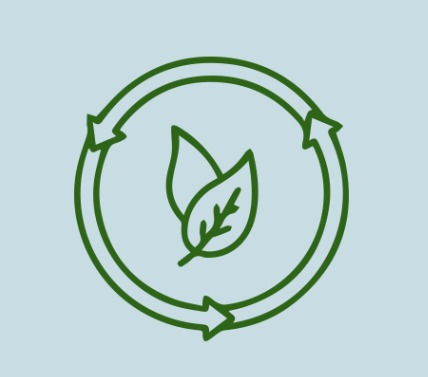
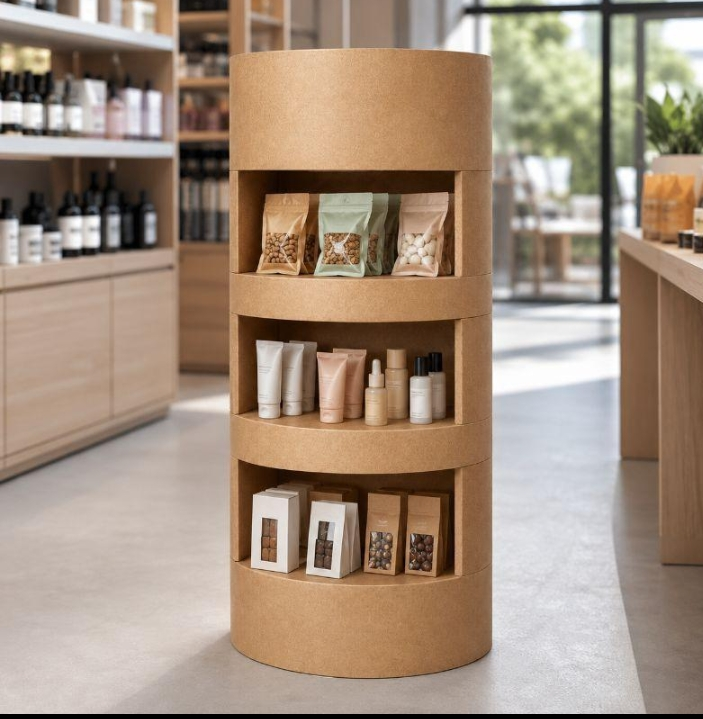

Short-lived displays
Displays can become waste after a single campaign, even when their structure is still useful.

LOOP SHELFTurning brand waste into reusable retail displays. One shelf, multiple campaigns, a better future.

THE FUTURE IS NOT DISPOSABLE.
IT'S DESIGNED TO COME BACK. ↻Retail displays attract attention in stores, but many are discarded when a promotion or campaign ends.
Displays can become waste after a single campaign, even when their structure is still useful.
Brands may need to produce new displays for every campaign or product launch.
Reusable structures and recoverable materials can have value beyond their first use.
Loop Shelf is a concept for modular retail displays made using suitable recovered brand materials. Its reusable structure can be refurbished, rebranded and returned for future campaigns.
Loop Shelf aims to keep display materials and structures in use for longer.
Collect suitable materials from brand campaigns and production waste.
SOURCE MATERIALSTransform recovered materials into a modular retail display.
CREATE THE ASSETUse the shelf in retail stores and refresh its branding for campaigns.
USE & REFRESHTake back, inspect, repair and prepare the display for its next use.
CLOSE THE LOOPA QR-based material passport can record the display's material information, campaign history, condition and refurbishment needs.
Material details
Record the materials used.
Usage history
Track campaigns and returns.
Next life
Document repair and reuse.
Modular retail display
↻ DESIGNED FOR REUSEIllustrative concept — the graphic is not a functional QR code.
Loop Shelf could offer different ways for brands and retailers to access reusable displays. These are proposed business models.
Sell modular displays made from suitable recovered materials.
ONE-TIME PURCHASEOffer reusable displays and periodic refurbishment through a subscription.
RECURRING REVENUEProvide, maintain, collect and redeploy displays for client campaigns.
SERVICE MODELRefresh panels, repair structures and adapt displays for new brands.
EXTEND ASSET LIFE₹485–₹1,080 illustrative prototype cost range per unit, subject to material availability, design, fabrication and testing. This is an estimate, not a confirmed market price.
Recovered materials may vary in quality and availability.
Prototype testing must confirm load capacity and stability.
Collection, storage, transport and return routes need planning.
Displays must meet retail expectations for finish and cleanliness.
Repair and return costs must support a viable business model.
A small pilot should prove the model before wider rollout.
We are not inventing a new display.
We are reinventing the lifecycle of a retail display.